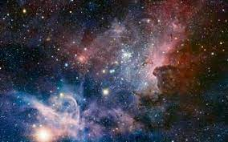
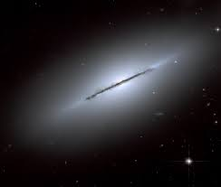
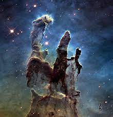

some cool links and space pictures

this is messier 57 one of the coolest images ever
  
some links of some space sites that are really cool
spacedashboard
some more links i cant hyperlink
simbad sky database pretty cool. and my favriote software is aladin sky atlas
Jan 24 2022, Monday
today i was really fasinated by triangles and how much you can do with them including triangulationn and finding out distances really easily using just 3 points of reference. just to keep in mind i dont really like geometry that much cause it seems more like vocab and actualy math. ive done research on arc minutes and paralaxes but it seems i have to have more knoledge on the right triangle to be able to do tha. so if you take object a lets say a planet in a solar system. and have a object b which is a astroid and a point at c dosnt really have to be anything just by knowing the distance between the objects could you figure out the amount of gravity each object or in this example an object and a single point that dosnt mean anything. i dont think so but i am in idiot in high school. one you dont know if it is stable what i mean by that is the objects could be movnig lets say that you know that there not moving then you know for sure the distances between those objects are staying the same likely because of gravity in which case could you figure out th amount of gravity is being exerted on an object or vise verca, there are a lot of other factors that play apart, but most you would already know if you had there distance. and if you figured out there stable you would need to have another picture in a differen time which would calculate there velocity. so to recap you have the velocity of both objects you have the distance between them. can u still figure out how much gravity is being exerted. this is a hard question. but if it is stable depending on the distance of the orbit can tell you something about the object. if an orbiting object is farther you could probobily tell how much gravity an object has because you know the distance between them and the orbiting distance then you wold know how much mass they have there for you would know the gravity exerted.
Jan 25 2022, Tuesday
the only real reason im doing this site is beacause of how fun this stuff is and i like talking about space and stuff like that. i was doing research into project dart from nasa to sum it up there gonna hit a small satalitle looking thing at an asteroid thats gonna come close to earth not as a despereate messier but as a test to see if in a desperate situation do we have options or are we just doomed. i think this is a good idea but the chances of that hapening and making the humans extinct is far lower than things like global warming and other things that you havent probobily heard about destroying the human race. im not trying to say this project is a waste but im saying that peoples prioritys are really skewed in todays times. well enouph of that im gonna talk about some science stuff that i want to talk about. can not believe i have not talked about the jwst(james webb space telescope) yet its really cool and one of the weirdest looking telescopes ever ant took a hell of a long time to create almost 12 years isnt that crazy but it is workit cause were gonna see the begining of time... in sixth months, what people dont understand is that they need a fuck ton of time to get everything ready and take some pictures that might take days to expose and edit to make look good. so it can see far enouph to see light thats 15 billion years old around the time of the big bang so we would be able to see a lot of comotion lol. thnis is also a great oporunity for new discoveries we have never looked this far we could find life(highly doubt it) but more realisticly we could find a astronomical body that we have never seen before since it was so long ago and matter was in its early stages of turning into a star then exploiding we could see some kind of mesh between stars and stuff like that could be pretty cool. i want to talk about colonization because its a hard subject to talk about and it seems like its never gonna happen, its been a long time since we went to the moon and elon musk is trying to populate mars with people and i dont really see how that could happen with todays tecknologie because the most we can do right now is send rovers and stuff like that to mars but people that seems like a extremely unnesecary leap forward. my opionon is to populate something different thats easier and has a higher suscess rate like the moon. its much closer and much less hostile for living and if we can do that maybe we can populate something harder like mars.